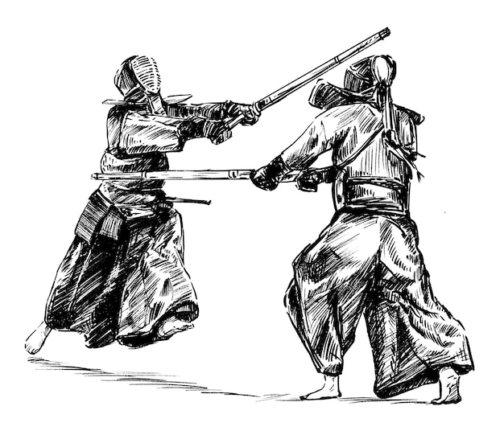

Kendo
About Kendo
Kendo which means 'the way of the sword' is a form of Japanese martial art that originated from kenjutsu. Kendo makes use of shinai-bamboo swords and boqu-an armour. It is a martial art form that requires rigorous physical activity and ultimate skills which require practice inevitably.
Short History
In the middle of the Heian period (794-1185), swords with distinctive features such as a curvature (sori) and raised ridges along the length of the blade (shinogi) were produced by Japanese smiths and became an integral part of the samurai's weaponry. Swords came to symbolize the samurai's spirit, and are often referred to as embodying the “mind” of the samurai. Not only seen as weapons, sword production flourished as an expression art representing strength and beauty.
From the Warring States period (1467-1603) through to the early stages of the Edo period (1603-1868), many schools of swordsmanship (kenjutsu) were established, and in the 18th century protective training armor resembling that used in kendo today was developed. Through this a new safe, full-contact methodology for kenjutsu training using bamboo swords (shinai) took root. Consequently, a competitive style of kenjutsu competition gained popularity and spread throughout the country around the end of the Edo period. Early in the 20th century, this type of training in swordsmanship, which was referred to as “gekiken” or “kenjutsu” was renamed “kendo” which literally means the “Way of the sword”. Kendo became a representative discipline of modern Japanese “budo” (martial arts/ways), of which the underpinning ideals of self-improvement are grounded in the spirit of the samurai.
The method of kendo that we study and enjoy now is a product of centuries of development in Japan, not other countries.